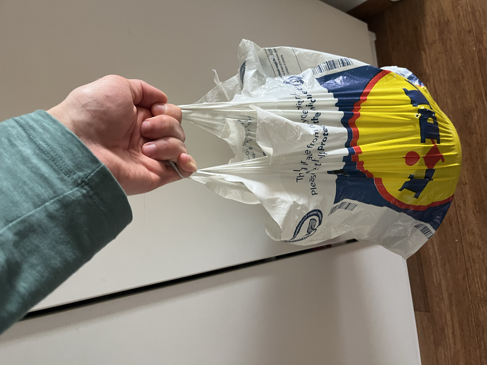

Zašto nas vrećica iz dućana "reže" po prstima?
Zamisli ovu situaciju: vraćaš se iz dućana s punom plastičnom vrećicom u kojoj su namirnice. Već nakon nekoliko minuta hoda prsti te počnu jako boljeti, a kad stigneš kući i pogledaš ruku, na koži su ostale duboke crvene crte. No kad istu tu težinu, recimo pet kilograma, poneseš u ruksaku sa širokom, podstavljenom naramenicom, prsti te uopće ne bole. Zašto?

Vrećica i ruksak mogu nositi potpuno iste stvari, a ipak jedna boli, a druga ne. Razlika, dakle, nije u težini tereta – nešto drugo je tu presudno.
Ako je težina tereta ista, zašto onda tanka ručka vrećice puno više boli od široke naramenice ruksaka? O čemu to zapravo ovisi? Odgovor ćemo potražiti pokusom na sljedećoj stranici!